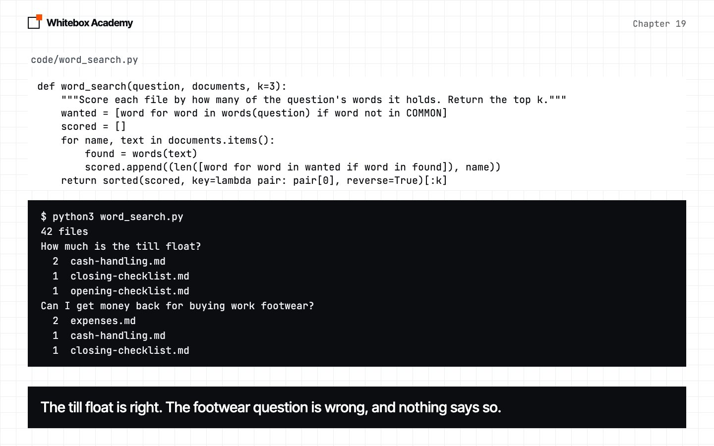
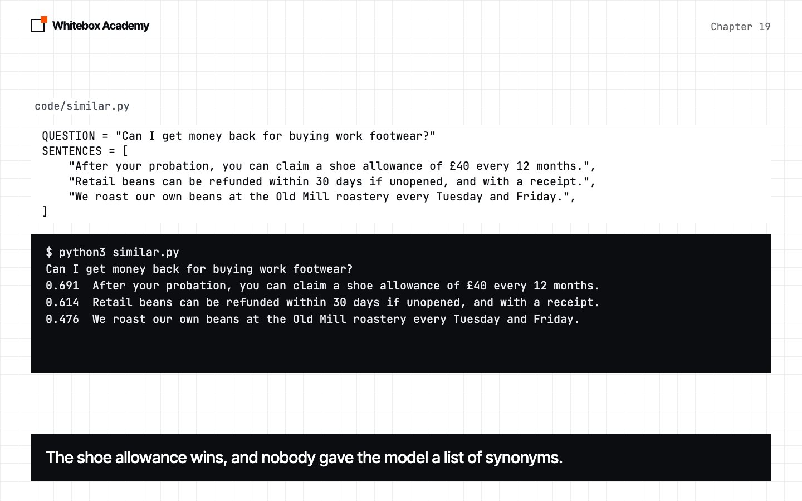
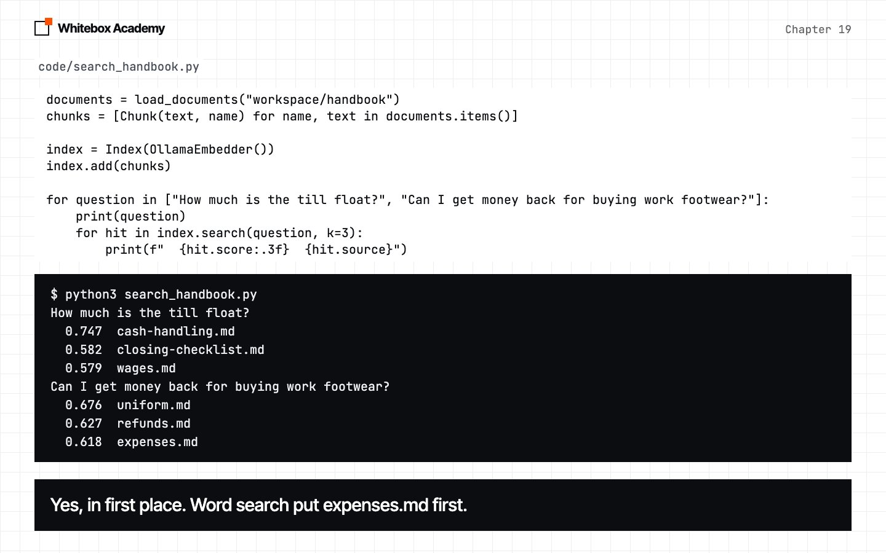
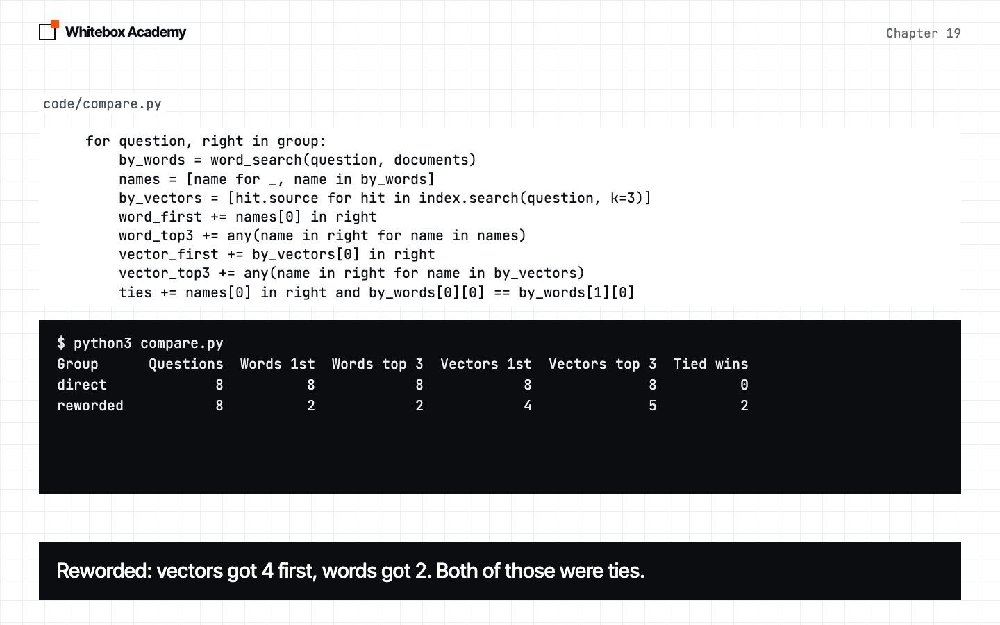
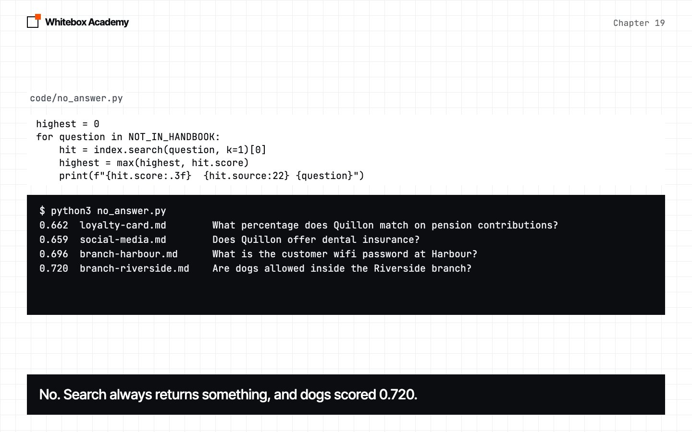
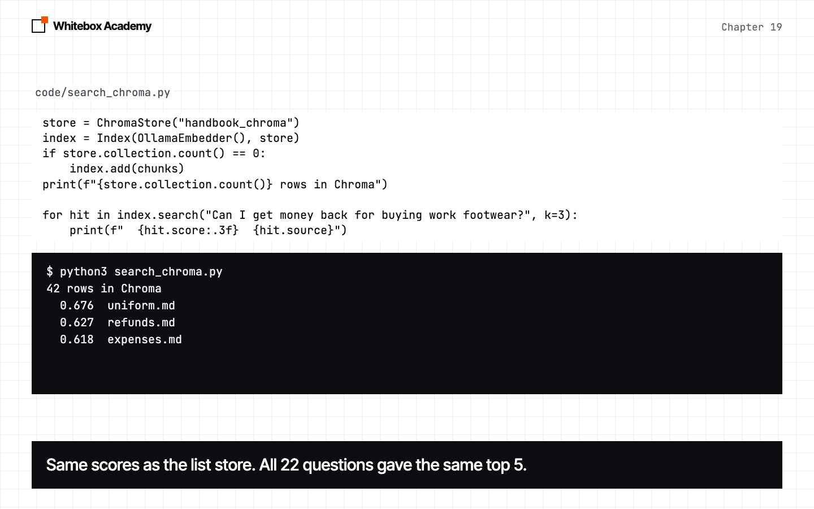

Embeddings and vector search
Search a handbook by meaning, count how far that gets you, and see where it still goes wrong.
Which file holds the answer?
In chapter 18, you learned to measure an agent. Part 4 gives the agent something new to work with: documents it has never seen.
The running example is Quillon Coffee, an invented chain of four coffee shops, with a staff handbook of 42 short files. A new barista has a question, and somewhere in those files is the answer.
Start Ollama, activate the .venv from chapter 05, and work in chapters/19-embeddings-and-vector-search/code. This chapter needs a second model, 274 MB here. Pull it, then install the packages from code:
$ ollama pull nomic-embed-text $ python3 -m pip install -r requirements.txt
The last step uses one more package, Chroma, and it has its own install step there. Nothing before it needs Chroma.
The new framework file is whitebox/rag.py. questions.py, misses.py, same_five.py, prefix_check.py, score_range.py and same_results.py are provided measuring tools. To check the framework, run python3 -m pytest tests from code. You should see 48 passed, with no Ollama needed.
Word search
Here’s the obvious way to search. Each file scores one point for each of the question’s words it holds, leaving out common words like “the”. key tells sorted what to sort by, and reverse=True puts the highest first. Files that tie stay in alphabetical order.
def word_search(question, documents, k=3):
"""Score each file by how many of the question's words it holds. Return the top k."""
wanted = [word for word in words(question) if word not in COMMON]
scored = []
for name, text in documents.items():
found = words(text)
scored.append((len([word for word in wanted if word in found]), name))
return sorted(scored, key=lambda pair: pair[0], reverse=True)[:k]
Predict: the first question uses the handbook’s own words, and the second doesn’t. Which files will each one find?
$ python3 word_search.py
42 files
How much is the till float?
2 cash-handling.md
1 closing-checklist.md
1 opening-checklist.md
Can I get money back for buying work footwear?
2 expenses.md
1 cash-handling.md
1 closing-checklist.md
The first is right. The second is wrong, and it doesn’t say so. The answer is in uniform.md: “After your probation, you can claim a shoe allowance of £40 every 12 months, using form FN-3 with a receipt.” Apart from “can”, that sentence shares no word with the question.
You could add “footwear means shoe” to a list, then “vacation means leave”, and on and on. People can ask about anything, in any words, so you’d never finish. What we need is a way to compare meanings.

Text as numbers
An embedding model doesn’t write a reply. It reads text and returns a fixed-length list of numbers, called a vector or an embedding. It was trained so that texts with similar meanings get similar numbers.
embedder = OllamaEmbedder()
short = embedder.embed_query("footwear")
long = embedder.embed_query("Can I get money back for buying work footwear? " * 20)
print(len(short), len(long))
print([round(number, 3) for number in short[:5]])
Predict: "..." * 20 repeats a string 20 times. Will the longer text give a longer list?
$ python3 first_vector.py
768 768
[-0.025, 0.086, -0.204, 0.012, -0.008]
Both are 768 numbers, so any two texts can be compared. No single number means anything you could name. Only the whole list does, and only next to another list from the same model.
Cosine: how close are two vectors?
Think of a vector as an arrow. Two arrows that point the same way mean two similar texts, and cosine similarity measures that.
def cosine(a, b):
"""How closely two vectors point the same way: 1 is identical, 0 is unrelated."""
dot = sum(x * y for x, y in zip(a, b))
size = math.sqrt(sum(x * x for x in a)) * math.sqrt(sum(y * y for y in b))
return dot / size if size else 0.0
dot, the dot product, multiplies the vectors number by number, and adds up the results.- An arrow’s length is the square root of the sum of its squares.
math.sqrtis Python’s square root. - Dividing by both lengths removes length from the answer, so only direction counts.
Predict: [6, 8] is twice as long as [3, 4], in the same direction. What will the score be?
pairs = [
([1, 0], [1, 0]),
([3, 4], [6, 8]),
([1, 0], [1, 1]),
([1, 0], [0, 1]),
([1, 0], [-1, 0]),
]
for a, b in pairs:
print(f"{a!s:8} {b!s:8} {cosine(a, b):.3f}")
$ python3 cosine_by_hand.py
[1, 0] [1, 0] 1.000
[3, 4] [6, 8] 1.000
[1, 0] [1, 1] 0.707
[1, 0] [0, 1] 0.000
[1, 0] [-1, 0] -1.000
Same direction gives 1, whatever the length. At right angles gives 0. Opposite gives -1. Now real text: the footwear question against three handbook sentences, the first cut short. It shares no useful word with it. Predict: which will score highest?
QUESTION = "Can I get money back for buying work footwear?"
SENTENCES = [
"After your probation, you can claim a shoe allowance of £40 every 12 months.",
"Retail beans can be refunded within 30 days if unopened, and with a receipt.",
"We roast our own beans at the Old Mill roastery every Tuesday and Friday.",
]
embedder = OllamaEmbedder()
question = embedder.embed_query(QUESTION)
vectors = embedder.embed_documents(SENTENCES)
print(QUESTION)
for sentence, vector in zip(SENTENCES, vectors):
print(f"{cosine(question, vector):.3f} {sentence}")
$ python3 similar.py
Can I get money back for buying work footwear?
0.691 After your probation, you can claim a shoe allowance of £40 every 12 months.
0.614 Retail beans can be refunded within 30 days if unopened, and with a receipt.
0.476 We roast our own beans at the Old Mill roastery every Tuesday and Friday.
The order is right, and nobody gave the model a list of synonyms. But the roastery sentence has nothing to do with the question, and it still scored 0.476. score_range.py scores 22 test questions against all 42 files:
$ python3 score_range.py
924 scores, lowest 0.309, highest 0.829
So a score isn’t a percentage. Compare scores with each other, for one question.

Embedder, store, index
An Embedder has two methods, the same way chapter 13 gave every model a shape. OllamaEmbedder adds the labels nomic-embed-text was trained with: search_document: and search_query:.
def embed_documents(self, texts):
return self.embed([f"search_document: {text}" for text in texts])
def embed_query(self, text):
return self.embed([f"search_query: {text}"])[0]
Did those labels matter here? On this small set, there’s no evidence either way, so we follow the model’s documentation and keep them.
$ python3 prefix_check.py
Group With prefixes Without
direct 8/8 8/8
reworded 4/8 4/8
codes 4/6 5/6
FakeEmbedder has the same two methods and needs no model. It adds up each word’s letters with ord, and uses % to pick one of 64 slots, so texts sharing words get similar vectors. That’s enough for tests, which only check the plumbing.
A vector store keeps vectors, and finds the closest. This one is a plain list:
class VectorStore:
"""Keeps every vector in a list, and compares a query with all of them."""
def __init__(self):
self.rows = []
def add(self, chunks, vectors):
self.rows += [(chunk, vector) for chunk, vector in zip(chunks, vectors)]
def search(self, vector, k=5):
hits = [Hit(chunk.text, chunk.source, cosine(vector, row)) for chunk, row in self.rows]
return sorted(hits, key=lambda hit: hit.score, reverse=True)[:k]
That’s the whole of vector search: score every row, sort, and keep the top k. A Chunk is a piece of text and the file it came from, and a Hit is a chunk with a score. Index joins an embedder to a store, so the rest of your code works in plain text:
class Index:
"""Embeds chunks into a store, and embeds questions to search it."""
def __init__(self, embedder, store=None):
self.embedder = embedder
self.store = store if store is not None else VectorStore()
def add(self, chunks):
self.store.add(chunks, self.embedder.embed_documents([chunk.text for chunk in chunks]))
def search(self, question, k=5):
return self.store.search(self.embedder.embed_query(question), k)
In this chapter, each chunk is one whole handbook file. These are the two questions from word search. Predict: will the second find uniform.md this time?
documents = load_documents("workspace/handbook")
chunks = [Chunk(text, name) for name, text in documents.items()]
index = Index(OllamaEmbedder())
index.add(chunks)
for question in ["How much is the till float?", "Can I get money back for buying work footwear?"]:
print(question)
for hit in index.search(question, k=3):
print(f" {hit.score:.3f} {hit.source}")
$ python3 search_handbook.py
How much is the till float?
0.747 cash-handling.md
0.582 closing-checklist.md
0.579 wages.md
Can I get money back for buying work footwear?
0.676 uniform.md
0.627 refunds.md
0.618 expenses.md
Both are right. Swap in Index(FakeEmbedder()), in fake_search.py, and only that one line changes:
$ python3 fake_search.py
How much is the till float?
0.535 forms.md
0.488 grinder-errors.md
0.397 allergens.md
Can I get money back for buying work footwear?
0.331 staff-discount.md
0.330 food-safety.md
0.330 branch-old-mill.md
The code ran the same way, and both are wrong. All the meaning comes from the embedding model, and none of it from the store.
-
Search by meaning
The footwear question finds
uniform.md.
Count it
Two questions prove nothing. questions.py holds 22, fixed before we measured anything: 8 direct questions that use the handbook’s words, 8 reworded ones that avoid them, and 6 about exact codes.
for question, right in group:
by_words = word_search(question, documents)
names = [name for _, name in by_words]
by_vectors = [hit.source for hit in index.search(question, k=3)]
word_first += names[0] in right
word_top3 += any(name in right for name in names)
vector_first += by_vectors[0] in right
vector_top3 += any(name in right for name in by_vectors)
ties += names[0] in right and by_words[0][0] == by_words[1][0]
in gives True or False, and adding True to a number adds 1. any is True if at least one item is. Predict: will vectors win all three groups?
$ python3 compare.py
Group Questions Words 1st Words top 3 Vectors 1st Vectors top 3 Tied wins
direct 8 8 8 8 8 0
reworded 8 2 2 4 5 2
codes 6 5 6 4 5 1
- Direct: a draw. When a question uses the document’s words, word search is fine.
- Reworded: the problem we started with. Vectors put the right file first 4 times, and in the top 3 five times. Word search got 2, and both were tied wins, where the alphabet chose.
- Codes: vectors didn’t win. Word search had all 6 in its top 3, and vectors had 5.
Two honest limits. Vector search still missed half of the reworded questions as a first result. And this is 22 questions on one handbook, so a gap of one in a group of 6 means little.
Is this like chapter 18, where the same agent moved from round to round? same_five.py builds the index five times:
$ python3 same_five.py
round 2: 22 of 22 top 3s match round 1
round 3: 22 of 22 top 3s match round 1
round 4: 22 of 22 top 3s match round 1
round 5: 22 of 22 top 3s match round 1
No movement. An embedding has no temperature, so nothing here is sampled. What limits this result isn’t chance between runs. It’s the small number of questions.
Now read the misses. misses.py shows where the right file ranked:
$ python3 misses.py
rank 4 I'm a barista and I want to quit. How much warning do I have to give?
rank 3 I woke up feeling awful and can't make it in. How do I let my boss know?
rank 5 I found evidence of mice in the storeroom. Who handles that?
rank 4 Do I need to do anything about my ponytail at work?
rank 2 What is form IR-9 for?
rank 12 What is FN-6 used for?
Word search only has to match the letters of FN-6, and an embedding gives no such promise. A file gets one vector, so the mice line has to share it with the rest of food-safety.md, the longest file here. That may be why it ranked low, but we haven’t tested it.

A score isn’t an answer
no_answer.py asks four questions the handbook doesn’t cover, then compares their scores with the 16 questions vectors got right. Predict: will the scores be clearly lower?
highest = 0
for question in NOT_IN_HANDBOOK:
hit = index.search(question, k=1)[0]
highest = max(highest, hit.score)
print(f"{hit.score:.3f} {hit.source:22} {question}")
right = []
for question, files in DIRECT + REWORDED + CODES:
hit = index.search(question, k=1)[0]
if hit.source in files:
right.append(hit.score)
below = len([score for score in right if score < highest])
print(f"{len(right)} right first hits: {below} scored below {highest:.3f}, the highest above")
$ python3 no_answer.py
0.662 loyalty-card.md What percentage does Quillon match on pension contributions?
0.659 social-media.md Does Quillon offer dental insurance?
0.696 branch-harbour.md What is the customer wifi password at Harbour?
0.720 branch-riverside.md Are dogs allowed inside the Riverside branch?
16 right first hits: 7 scored below 0.720, the highest above
Search always returns something, because it sorts what exists and returns the top k. On this data, no cut-off works: 7 of the 16 right results scored below the dogs question, which has no answer at all.
branch-riverside.md really is the closest file to a question about the Riverside branch. A score measures how close the topic is. It doesn’t say the answer is in the file.

Save, then swap the store
The vectors don’t change unless the text does, so you can save them. VectorStore has save and load, which write JSON. save_load.py saves the store, loads it into a new one, and searches:
store = VectorStore()
store.load(SAVED)
reloaded = Index(OllamaEmbedder(), store)
hit = reloaded.search(QUESTION, k=1)[0]
print(f"{hit.score:.3f} {hit.source}")
$ python3 save_load.py
saved 42 rows, 453,385 bytes
0.676 uniform.md
A saved vector only makes sense next to vectors from the same model, and a changed document needs embedding again.
This step needs Chroma, which needs Python 3.12 to 3.14. Install it with python3 -m pip install -r requirements-chroma.txt. If that fails on your Python version, read this step and skip the runs. Everything else, and the exercises, still works.
A vector database is a store built for much more than 42 files. It keeps its data on disk, and builds an index so it doesn’t have to compare with every row. Chroma runs inside your Python. 42 rows is far too few to show any difference in speed, and we didn’t measure one. What this shows is how little of your code changes.
class ChromaStore(VectorStore):
"""The same two methods, backed by the Chroma vector database."""
def __init__(self, path, name="handbook"):
import chromadb
client = chromadb.PersistentClient(path=str(path))
self.collection = client.get_or_create_collection(name, metadata={"hnsw:space": "cosine"})
def add(self, chunks, vectors):
start = self.collection.count()
self.collection.add(
ids=[str(start + number) for number in range(len(chunks))],
embeddings=vectors,
documents=[chunk.text for chunk in chunks],
metadatas=[{"source": chunk.source} for chunk in chunks],
)
def search(self, vector, k=5):
found = self.collection.query(query_embeddings=[vector], n_results=k)
rows = zip(found["documents"][0], found["metadatas"][0], found["distances"][0])
return [Hit(text, data["source"], 1 - distance) for text, data, distance in rows]
import chromadbis inside__init__, sowhiteboxstill works on a machine without Chroma.- A collection is one set of rows, like a table. Every row needs a unique string
id. - Chroma reports distance, where smaller is closer, so
1 - distancegives our score back.
store = ChromaStore("handbook_chroma")
index = Index(OllamaEmbedder(), store)
if store.collection.count() == 0:
index.add(chunks)
print(f"{store.collection.count()} rows in Chroma")
for hit in index.search("Can I get money back for buying work footwear?", k=3):
print(f" {hit.score:.3f} {hit.source}")
$ python3 search_chroma.py 42 rows in Chroma 0.676 uniform.md 0.627 refunds.md 0.618 expenses.md $ python3 search_chroma.py # run it again 42 rows in Chroma 0.676 uniform.md 0.627 refunds.md 0.618 expenses.md
Index didn’t change. The second run embedded no documents, because the rows were on disk. same_results.py runs all 22 questions through both stores:
$ python3 same_results.py
same top 5, in the same order: 22 of 22
largest score difference: 0.000001
The stores agree here. Chroma’s index can be approximate on big collections, so don’t assume that for every data set. Why the if around add? A database remembers. Predict: what happens if you add the same chunks twice?
index.add(chunks)
index.add(chunks)
print(f"{store.collection.count()} rows")
for hit in index.search("Can I get money back for buying work footwear?", k=3):
print(f" {hit.score:.3f} {hit.source}")
$ python3 chroma_twice.py
84 rows
0.676 uniform.md
0.676 uniform.md
0.627 refunds.md
No error. uniform.md fills two of your three results, and expenses.md has been pushed out. Check count() before you add.

These are real errors
| What happened | What you see | The fix |
|---|---|---|
| Ollama isn’t running | whitebox.models.ModelError: Couldn't reach Ollama | Start Ollama |
| You haven’t pulled the embedding model | whitebox.models.ModelError: Ollama said 404: {"error":"model \"nomic-embed-textt\" not found, try pulling it first"} (we used a misspelled name to trigger it) | ollama pull nomic-embed-text |
| Chroma isn’t installed | ModuleNotFoundError: No module named 'chromadb' | Install it on Python 3.12 to 3.14, or use VectorStore |
You called save on a ChromaStore | AttributeError: 'ChromaStore' object has no attribute 'rows' | Don’t. Chroma is already on disk |
| The query came from a different embedder, in Chroma | chromadb.errors.InvalidArgumentError: Collection expecting embedding with dimension of 768, got 64 | Use the same embedder to add and to search |
No error: the wrong embedder, with the list store
cosine uses zip, which stops at the shorter list. Searching the saved 768-number vectors with FakeEmbedder ran, and returned allergens.md at 0.072 for the footwear question.
No error: the wrong folder
load_documents returns an empty dictionary for a folder that isn’t there, so the scripts print no results. Run them from code.
Exercises
From chapters/19-embeddings-and-vector-search, open exercises.py and complete the five TODOs:
unit: scale a vector to length 1.above: drop hits below a score.best_per_source: keep the best hit from each file, which cleans up duplicates.rank_of: find where a file ranked.UnitStore: your own store behind the same two methods.Indexworks with it unchanged.
Then run python3 -m pytest test_exercises.py from that folder. These checks use FakeEmbedder, so Ollama doesn’t need to be running. You’ve finished when you see 5 passed.
Common mistakes
- Reading a score as a percentage. Here, the lowest of 924 scores was 0.309. Compare scores for one question.
- Trusting a top result. Search always returns something, even when no file has the answer.
- Mixing embedders. Vectors from different models can’t be compared, and the list store won’t warn you.
- Skipping the prefixes.
embed_documentsandembed_queryadd them for you. Callingembeddirectly doesn’t. - Adding to Chroma on every run. It remembers, so check
count()first. - Assuming vectors beat words everywhere. They didn’t on exact codes here. Measure it on your own questions.
- Judging from one good question. The footwear question looked perfect. The reworded set got 4 of 8.
What you opened
- Word search fails when a question avoids the document’s words, and it fails silently.
- An embedding model turns any text into a fixed-length vector. Similar meaning gives similar vectors.
cosinemeasures how closely two vectors point the same way.- An
Embedderturns text into vectors. AVectorStorekeeps and ranks them. AnIndexjoins the two. ChromaStorehas the same methods, soIndexdidn’t change.- Here, vectors helped most on reworded questions, and didn’t help on exact codes.
- A score tells you how close a topic is. It doesn’t tell you the answer is there.
The idea that a word’s meaning can be learned as a vector was made popular by the 2013 paper Efficient Estimation of Word Representations in Vector Space. Nomic Embed describes the model you used. Chroma’s hnsw setting is named after the search method from this 2016 paper.